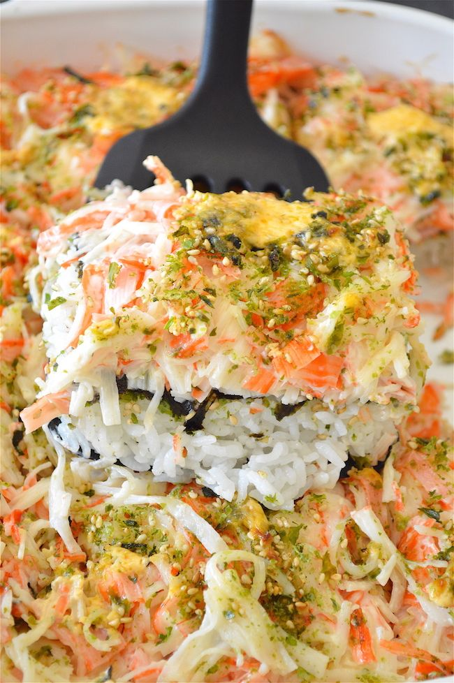
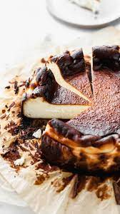
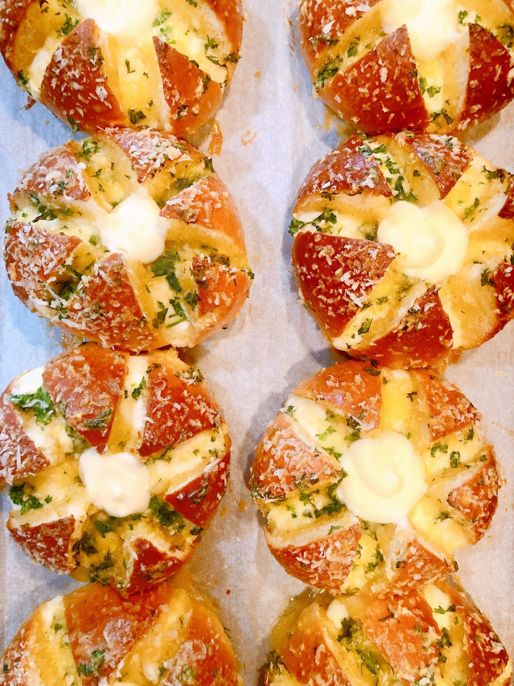
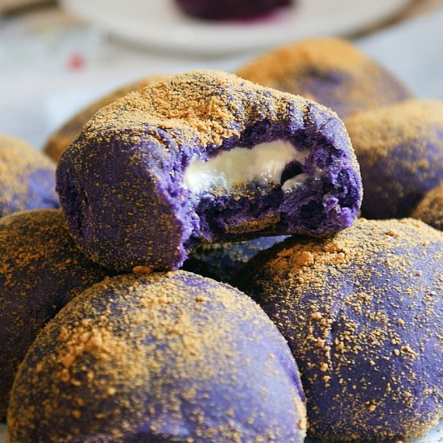

Home
About us
Goals
Contact
Log in
Sushi Bake
Cinnamon Rolls


Korean Garlic Buns
Sushi Bake
Basque Burnt Cheesecake

This baked casserole is delicious, spawning flavors from spam sushi bakes to takoyaki bakes.
While I can’t imagine ordering a sushi bake while in a restaurant, eating sushi bake at home is still very popular.

Another trend that started before the pandemic but became fully viral during the lockdown is the burnt basque cheesecake.
Today, celebrated chefs and home bakers continue to offer this cheesy melty treat. Dscription
Cinnamon Rolls
Dalgona Coffee
Cinnamon rolls consist of a rolled sheet of yeast-leavened dough with cinnamon, sugar, and raisins and other is sprinkled over a thin coat of butter. Cinnamon rolls are one of the easy things you can bake using pantry staples. Cinnamon rolls seem to have become more popular than ever because they’re just good old-fashioned comfort food that reminds us all of better days.
In times of stress, we’re wired to seek out comfort food.
In times of stress, we’re wired to seek out comfort food.
The Korean-candy inspired whipped-coffee concoction may be last on this list, but it can easily be called the first viral food trend this quarantine. Easy to make if you’re lucky enough to have a hand-mixer, and also a great opportunity to gripe or brag about your arm-strength if you don’t.
It was curiosity and slow-motion videos that made the world take notice.
Korean Garlic Buns
Ube Cheese Pandesal

This soft bread slathered with sweet cream cheese, garlic butter, and herbs took over everyone’s feed mid-pandemic.
Perfect for those who enjoy sweet-savory things.

The ube or the ube cheese pandesal actually started being popular before the lockdown.
Reaching peak status during the quarantine with many home-bound first time or casual bakers making it at home, it’s hard to imagine life without having a favorite ube cheese or ube pandesal baker.